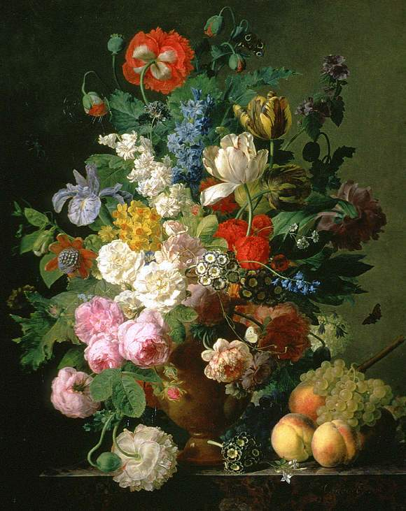
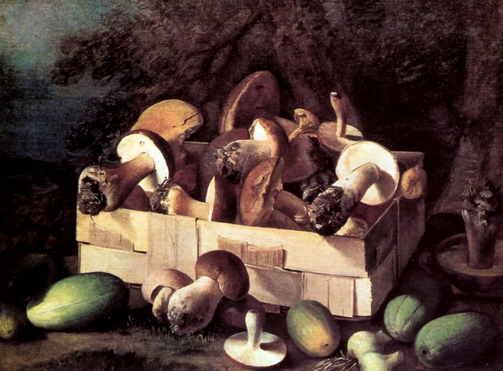
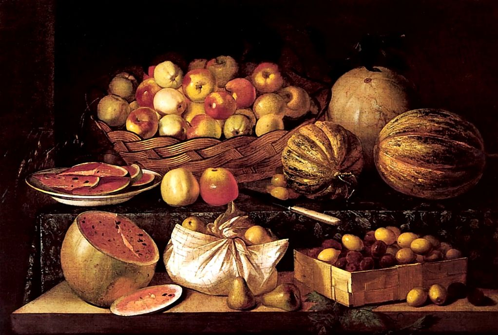
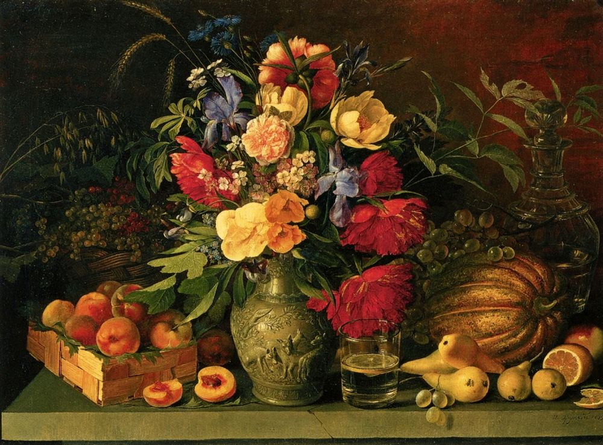
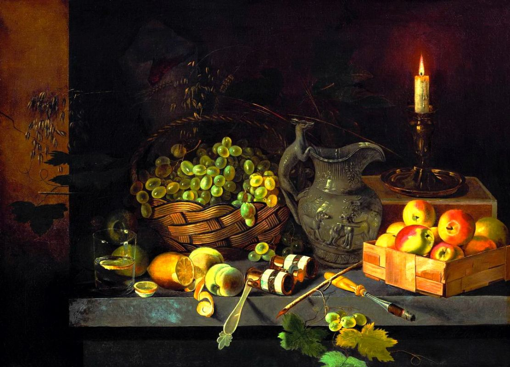
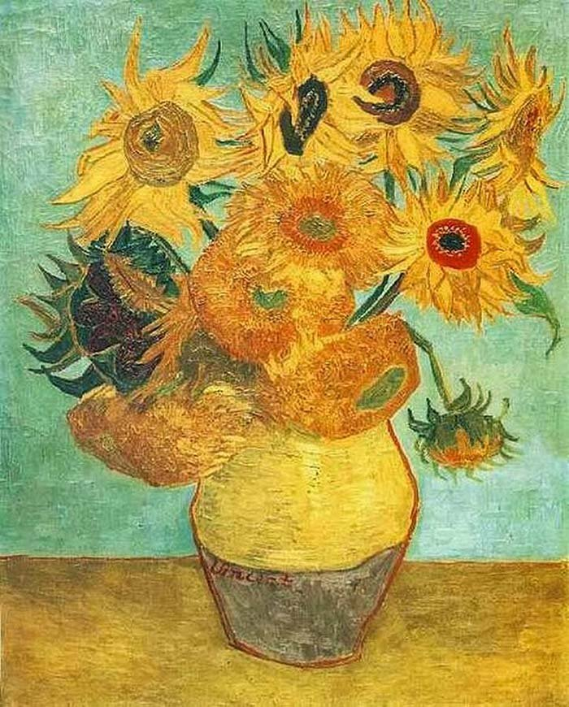

Натюрморт. Картины
Главная
3D объекты
Словарь
Жанры
Я.Ф.ван Дел "Натюрморт с цветами и фруктами" |
И.Ф.Хруцкий "Натюрморт с грибами" |
 И.Ф.Хруцкий "Фрукты" |
И.Ф.Хруцкий "Цветы и плоды" |
И.Ф.Хруцкий "Натюрморт со свечкой" |
 Ван Гог "Ваза с 12 подсолнухами" |